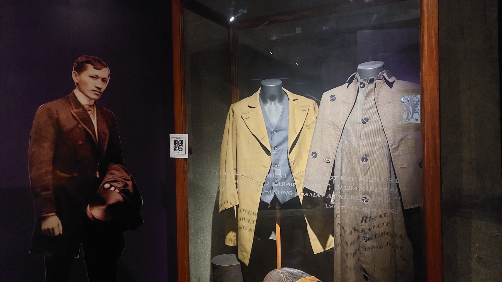
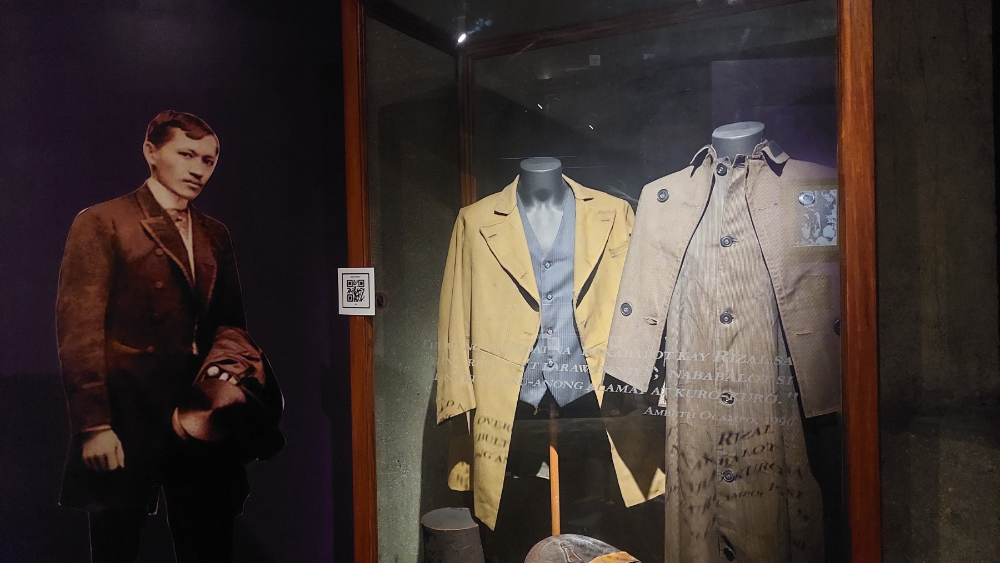

About Jose Rizal
Jose Rizal, a Filipino nationalist and polymath, was born on June 19, 1861,
in Calamba, Laguna, Philippines, during the Spanish colonial period.
He played a significant role in the Philippine Revolution against
Spanish colonial rule through his works and activism. Here's some key
information about him:
- Early Life and Education: Rizal came from a well-educated family
and was exposed to various languages and cultures from an early
age. He studied medicine and the arts in Manila, then continued
his studies in Europe, particularly in Spain, Germany, and France.
- Literary Works: Rizal was a prolific writer and intellectual.
He is best known for his novels, "Noli Me Tangere"
(Touch Me Not) and "El Filibusterismo" (The Filibuster),
which exposed the injustices and abuses of Spanish colonial
rule in the Philippines. These novels played a significant
role in shaping Filipino national identity and consciousness.
- Activism and Reform: Rizal was deeply involved in the Filipino nationalist
movement. He advocated for social reforms and equality under Spanish colonial
rule through his writings and actions. He founded La Liga Filipina, a civic
organization promoting Filipino interests, and later became a member of
the Katipunan, a revolutionary society fighting for Philippine independence.
- Exile and Execution: Rizal's activism and writings angered Spanish authorities,
leading to his exile from the Philippines. He spent several years in exile in
various parts of Europe before returning to the Philippines briefly. In 1896,
he was arrested by Spanish authorities on charges of rebellion, sedition,
and conspiracy. He was executed by firing squad on December 30, 1896,
at the age of 35, in Manila.
- Legacy: Jose Rizal is considered a national hero in the Philippines for his
contributions to the country's struggle for independence and his advocacy for
social justice, education, and national identity. His martyrdom inspired
subsequent generations of Filipinos in their fight for freedom and democracy.
 
